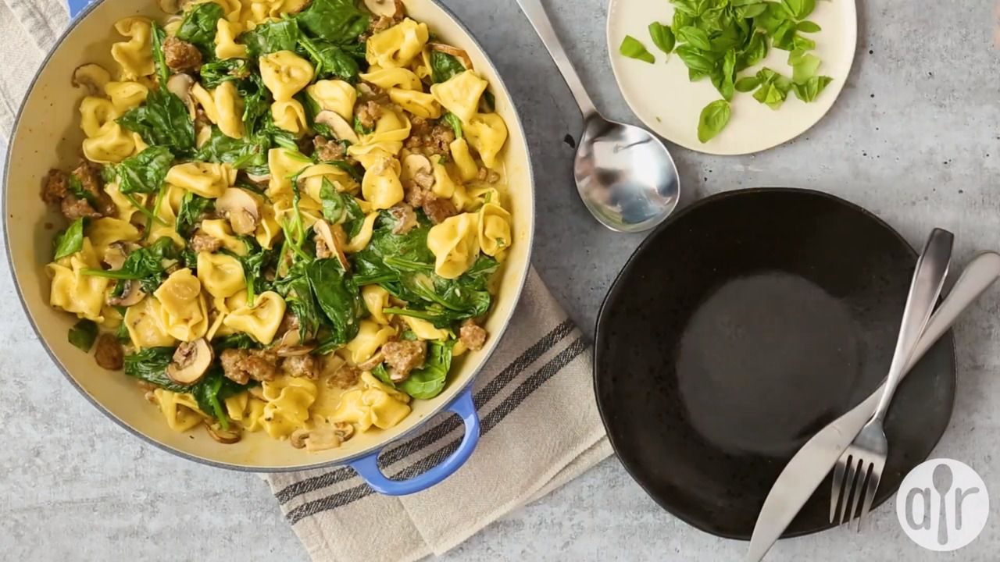

Italian Sausage Tortellini
This receipe contents & photos were taken from AllRecipes and is being used for educational and demonstration purposes only. All credit is due to the author of the original post - Link to original post
Prep Time: 10 minutes
Cook Time: 25 minutes
Total Time: 35 minutes
Servings: 6
Yield: 6 Servings

Description
"Tons of flavor in this tortellini with Italian sausage! Your family will love this!" - Garrett Heintz
Ingredients:
- 2 tablespoons unsalted butter
- 1 (8 ounce) package baby portobello mushrooms, sliced
- 1 cup dry white wine (such as Pinot Grigio), divided
- 3 cloves garlic, minced, divided
- 10 ounces mild Italian sausage, casings removed
- 1 (16 ounce) package three-cheese tortellini
- 14 1/2 ounces Alfredo basil sauce
- 1 (5 ounce) package baby spinach leaves
Steps:
- Prepare batter: Combine eggs, salt, pepper, cayenne, 1 cup plus 1 tablespoon flour, and milk in a large bowl; whisk thoroughly until batter is very smooth and no lumps remain. Whisk in water. Cover and let rest at room temperature for 1 hour.
- Prepare sausages: Heat vegetable oil in a skillet over medium-high heat. Add sausages and cook until browned, 2 to 3 minutes per side. Remove from the heat and transfer to a buttered 9x12- or 9x13-inch baking dish. Pour oil from the skillet over the sausages; brush oil with a pastry brush all over the bottom and up the sides of the dish.
- Start onion gravy: Melt butter in the same skillet over medium-high heat. Add onion and salt; saute until soft and starting to brown, 5 to 6 minutes.
- While onion is cooking, pour batter in and around the sausages. Place in the center of a cold oven and turn temperature to 500 degrees F (260 degrees C). Set oven timer for 30 minutes.
- While toad in the hole cooks, finish onion gravy: Stir in flour and cook for about 2 minutes. Whisk in chicken broth and return to a simmer. Add Worcestershire sauce and balsamic vinegar and simmer until gravy thickens up and reduces, about 5 minutes. Reduce heat to low and stir in green onions. Taste and adjust seasoning.
- When timer goes off, remove toad in the hole from the oven; it should be browned and puffed. Spoon gravy over the sausages and garnish with green onions and chives.
- Serve with extra gravy.